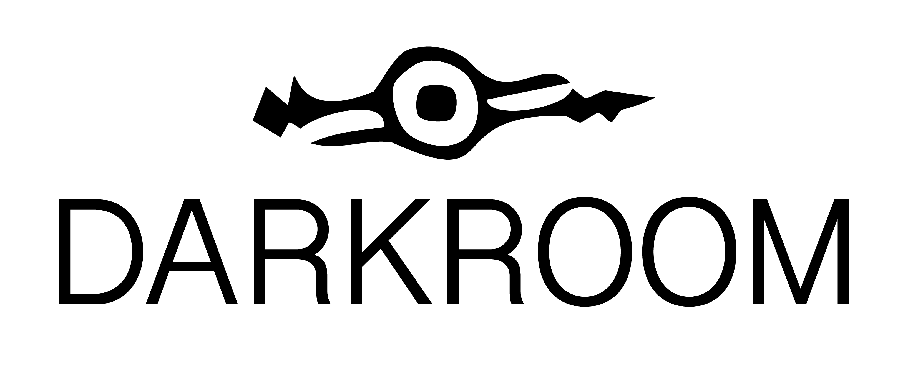

A working room for coded experiments — generative sketches, audio-reactive visualizers, and small browser-based tools. Some are finished pieces, some are open-ended explorations. Click any panel to open the live experiment.

Please enable JavaScript to view the playground experiments.